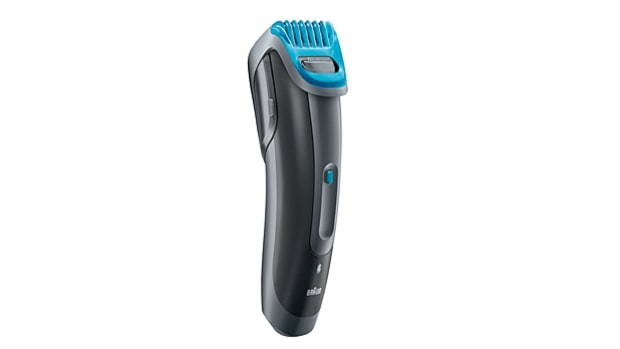

The Dummy Store
Electric Beard Trimmer
Go back to the list

| Price: |
$45 |
| Brand: |
Dummy Brand |
| Products left: |
5 |
| Find it in this Stores: |
Santiago, Columbia, Berlin |
| Shipping: |
Free |
Groom at home with the WAHL Mustache & Beard Trimmer, Model 5537-420. This item comes with a bonus nose, ear and brow trimmer. It's a simple way to maintain your appearance from the comfort of your own bathroom. This WAHL battery-operated trimmer features a five-position guide for precise edge cutting and individual guide combs for accurate trimming. Just select your preferred length, click the guide in and trim with confidence. The high-carbon steel blades are precision ground to stay sharp longer. With its compact and ergonomic design, it's totally comfortable to handle. The storage base allows you to keep all your trimming accessories together for easy access. A cordless design means you aren't tied to an outlet. You can even take this handy cordless beard trimmer with you to the gym, work or when you travel. It requires three AA batteries (not included) Wahl Mustache and Beard Trimmer, Battery-Operated